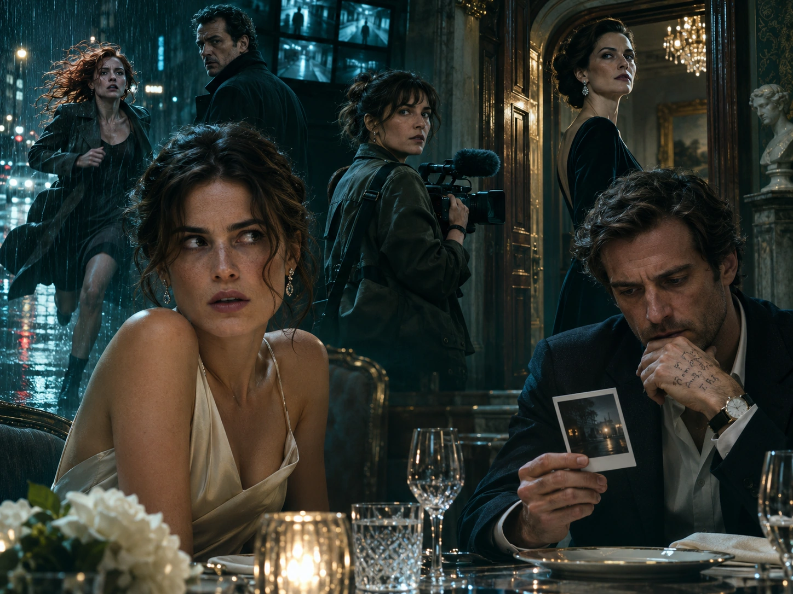
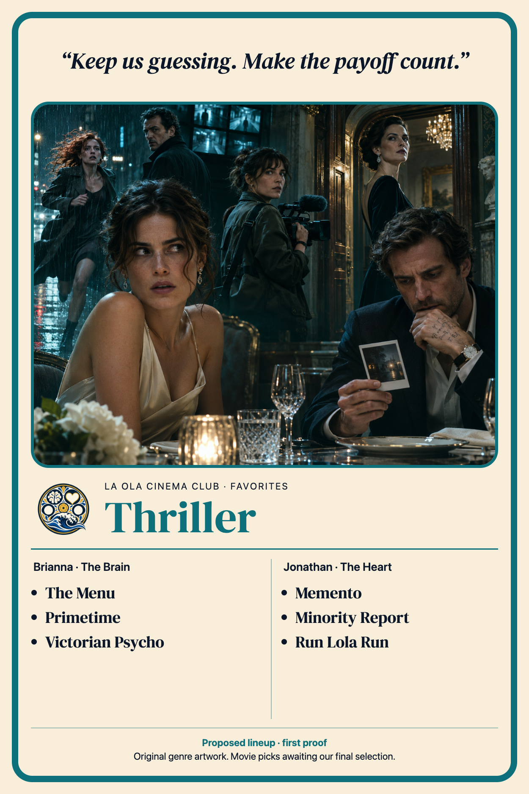

The films we come back to
Thriller.
Keep us guessing. Make the payoff count.
For the twists, the tension, and the movies we keep trying to figure out.
Back to our favorites
Proposed favorites · lineup draft
Two lists. Plenty of suspense.
The Menu is one of Brianna’s original favorites. Primetime and Victorian Psycho are new suggestions based on her saved ratings. Jonathan’s three choices come from his original favorites in other genres. We’re choosing the final Thriller lineup together.
Brianna · The Brain
- The Menu
- Primetime
- Victorian Psycho
Jonathan · The Heart
- Memento
- Minority Report
- Run Lola Run
One shared Club line, two movie lists. These aren’t individual quotes or new ratings. The image is original genre artwork with fictional characters.
The first card
The Thriller favorites proof.

First proof with a proposed lineup. Tap the card to open the full-size image.
From the collection
Thrillers we’ve reviewed.
Actual recorded reviews with Thriller as a primary or secondary genre.
Opening the Thriller shelf…